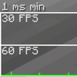
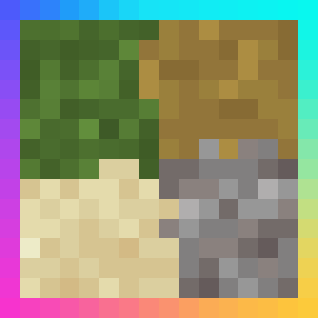
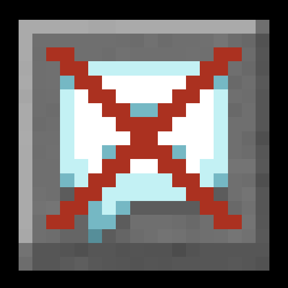

Fabric API 추천

Mod Menu 추천

Sodium 추천
Sodium Extra 동작

Lithium 동작
FerriteCore 추천
ModernFix 동작
ImmediatelyFast 동작

Entity Culling 동작

Krypton 동작
Cull Less Leaves 동작
Indium 주의
Iris Shaders 동작

Continuity 동작
Distant Horizons 주의

Complementary Shaders - Reimagined 동작

BSL Shaders 동작
Solas Shader 동작
EMI 동작

Just Enough Items (JEI) 동작
Roughly Enough Items (REI) 동작
AppleSkin 동작

Xaero's Minimap 동작
JourneyMap 동작
Simple Voice Chat 추천
